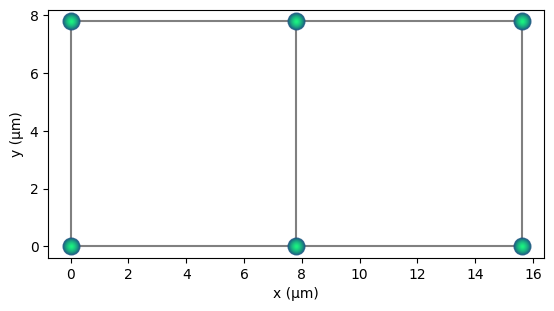
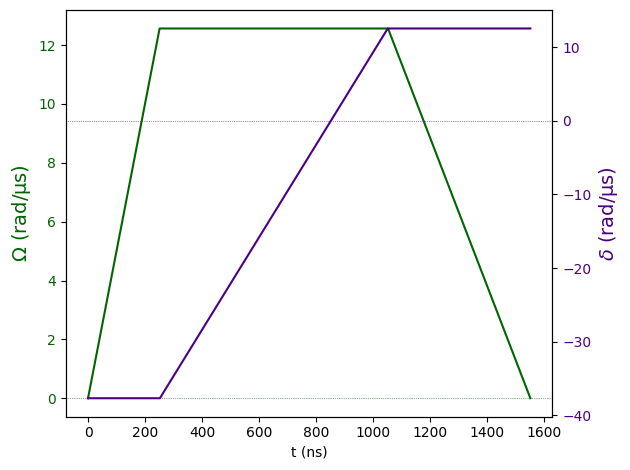
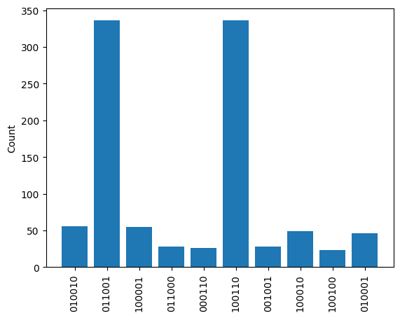
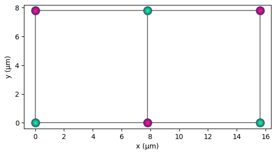
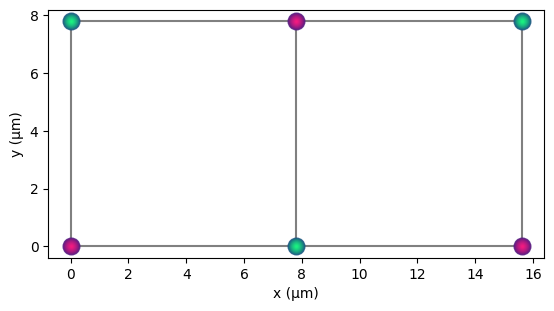

Calculation Example#
The following tutorial shows how to use qse to run a calculation.
We use pulser here for the backend.
import matplotlib.pyplot as plt
import numpy as np
import qse
import pulser
Create a 2D square lattice#
omega_max = 2.0 * 2 * np.pi # rad/µs
rabi_frequency = omega_max / 2.0 # rad/µs
# Now we generate the qbits object that represents a 2D lattice.
# Keeping the lattice spacing a bit below the blockade radius keeps
# the nearest neighbours antiferromagnetic.
blockade_radius = pulser.devices.MockDevice.rydberg_blockade_radius(
rabi_frequency
) # in µm
q2d = qse.lattices.square(
lattice_spacing=0.8 * blockade_radius, repeats_x=3, repeats_y=2
)
q2d.draw(radius="nearest", units="µm")

Create the hamiltonian#
delta_0 = -6 * rabi_frequency # ns
delta_f = 2 * rabi_frequency # ns
t_rise = 252 # ns
t_fall = 500 # ns
t_sweep = (delta_f - delta_0) / (2 * np.pi * 10) * 1000 # ns
# up ramp, constant, downramp waveform
amplitude_afm = pulser.CompositeWaveform(
pulser.waveforms.RampWaveform(t_rise, 0.0, omega_max),
pulser.waveforms.ConstantWaveform(t_sweep, omega_max),
pulser.waveforms.RampWaveform(t_fall, omega_max, 0.0),
)
# corresponding waveform for detuning
detuning_afm = pulser.CompositeWaveform(
pulser.waveforms.ConstantWaveform(t_rise, delta_0),
pulser.waveforms.RampWaveform(t_sweep, delta_0, delta_f),
pulser.waveforms.ConstantWaveform(t_fall, delta_f),
)
pulser.Pulse(amplitude=amplitude_afm, detuning=detuning_afm, phase=0.0).draw()

Set up the calculator and run the job#
pcalc = qse.calc.Pulser(qbits=q2d, amplitude=amplitude_afm, detuning=detuning_afm)
pcalc.build_sequence()
pcalc.calculate()
10.1%. Run time: 0.00s. Est. time left: 00:00:00:00
20.0%. Run time: 0.01s. Est. time left: 00:00:00:00
30.0%. Run time: 0.01s. Est. time left: 00:00:00:00
40.0%. Run time: 0.01s. Est. time left: 00:00:00:00
50.0%. Run time: 0.02s. Est. time left: 00:00:00:00
60.1%. Run time: 0.02s. Est. time left: 00:00:00:00
70.0%. Run time: 0.02s. Est. time left: 00:00:00:00
80.0%. Run time: 0.03s. Est. time left: 00:00:00:00
90.0%. Run time: 0.03s. Est. time left: 00:00:00:00
100.0%. Run time: 0.04s. Est. time left: 00:00:00:00
Total run time: 0.04s
time in compute and simulation = 0.048681020736694336 s.
Sample the result#
count = pcalc.results.sample_final_state()
most_freq = {k: v for k, v in count.items() if v > 10}
plt.bar(list(most_freq.keys()), list(most_freq.values()))
plt.xticks(rotation="vertical")
plt.ylabel("Count")
plt.show()

The states 011001 and 100110 are the most prevalent, we can visualise them using the colouring parameter in draw.
We see that they correspond to anti-ferromagnetic orderings.
q2d.draw(radius="nearest", colouring="011001", units="µm")

q2d.draw(radius="nearest", colouring="100110", units="µm")

Version#
qse.utils.print_environment()
Python version: 3.12.3
qse version: 0.2.25